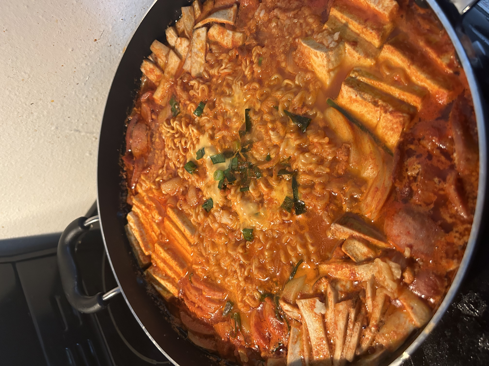
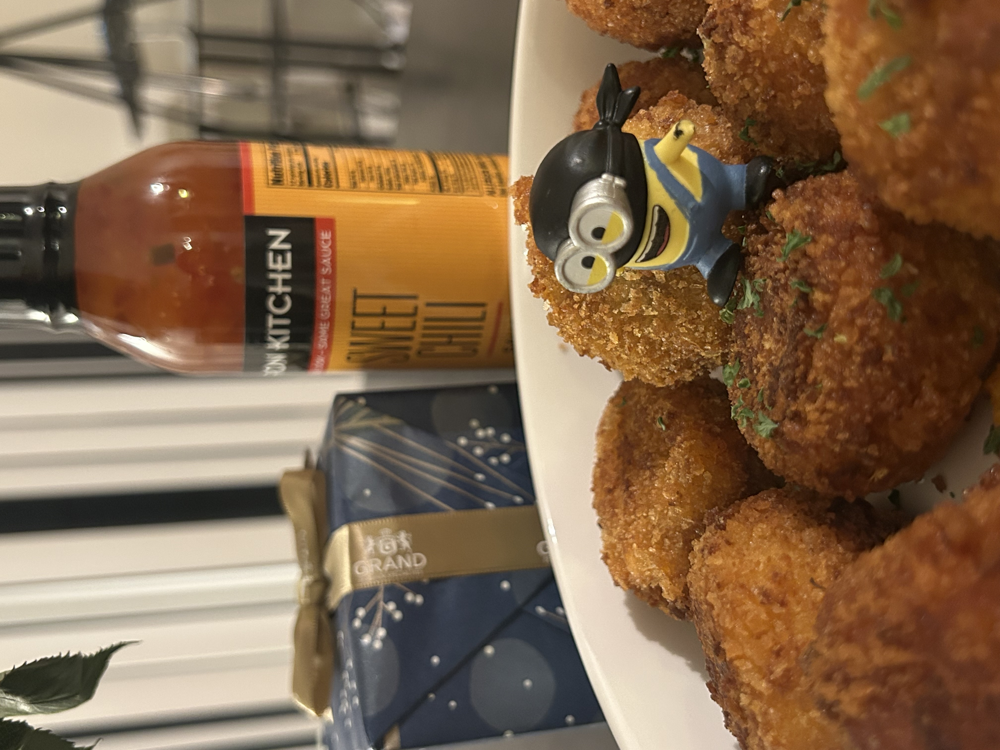
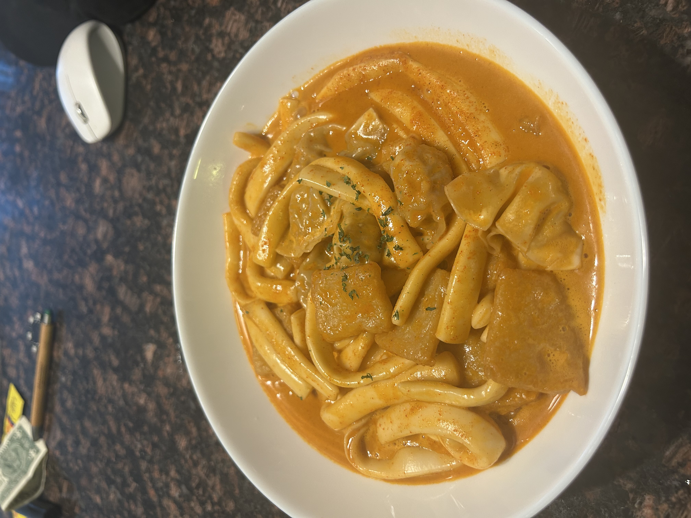

Budae Jjigae (Army Stew)
A rich, spicy Korean stew with sausage, ham, and hearty vegetables. Perfect for cold days!

Cheese Potato Balls
Crispy on the outside, soft and cheesy on the inside. A perfect snack or appetizer!

Rose Tteokbokki
Korean rice cakes in a creamy, spicy rose sauce. A delicious twist on a classic dish.